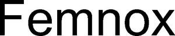

Trade Mark Journal No.2025/045 7 November 2025
WO0000001882187 (9,10,20,24,35,41,42,44)
Office of origin: Switzerland
Date of International Registration:7 August 2025
Date of designation in the UK:
7 August 2025

International priority date claimed: 23 July 2025
(Switzerland)
(834344)
- Class 9
- Electronic databases; application software, in particular software for analyzing and monitoring sleep and health data.
- Class 10
- Electric and electronic apparatus for monitoring body functions and behavior during sleep, for medical use.
- Class 20
- Beds (furniture); mattresses; slatted frames, not of metal; pillows; bedding (excluding bed linen).
- Class 24
- Bed linen; blankets for beds.
- Class 35
- Retail services for beds, bed bases, bed frames, bedding, mattresses, mattress toppers, duvet covers and pillow shams, furniture, pillows and slatted frames; demonstration and presentation of goods relating to beds, mattresses, bed bases and slatted bed bases.
- Class 41
- Training with respect to health; health education; consulting in relation to the above-mentioned services.
- Class 42
- Services in the field of science and technology, as well as research and development services in this field; industrial research and analysis services; design and development of computers and computer programs.
- Class 44
- Health care for people; hygienic and beauty care for people; advice with respect to health; advice with respect to sleep.
NoxBlanc AG
Representative: Wenger Vieli AG, Dufourstrasse 54, CH-8034 Zürich, SWITZERLAND